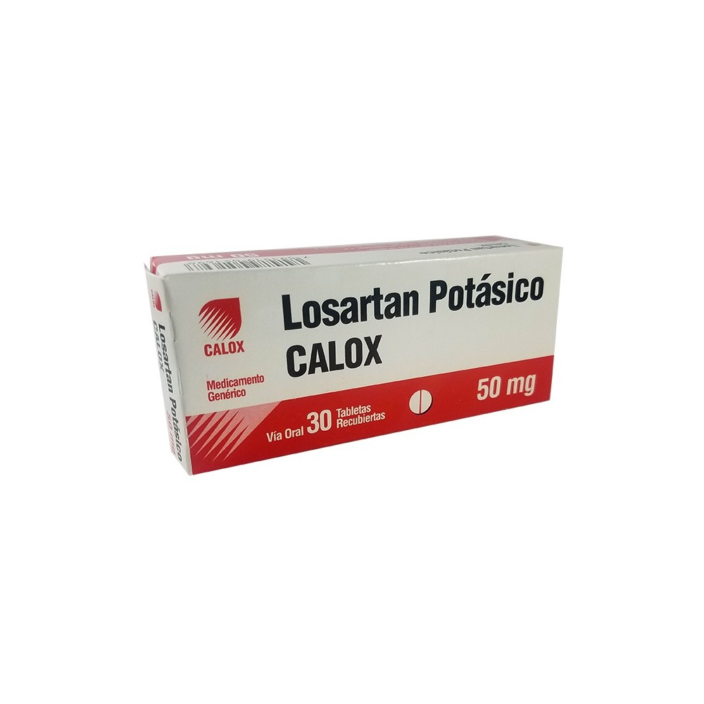

Bloqueo de Receptores AT1: Los ARA-II se unen de manera competitiva a los receptores AT1, impidiendo que la angiotensina II se una a estos receptores. La angiotensina II es una hormona que causa vasoconstricción y aumenta la presión arterial. Al bloquear los receptores AT1, los ARA-II previenen estos efectos.
Efectos Hemodinámicos:
Vasodilatación: Al bloquear los receptores AT1, se produce una relajación de los vasos sanguíneos, lo que reduce la resistencia vascular periférica y, por ende, la presión arterial.
Reducción de la Secreción de Aldosterona: La angiotensina II también estimula la liberación de aldosterona, una hormona que aumenta la retención de sodio y agua. Al bloquear los receptores AT1, los ARA-II reducen la secreción de aldosterona, disminuyendo la retención de líquidos y la presión arterial.
Efectos en el Sistema Renina-Angiotensina-Aldosterona (SRAA): Los ARA-II interrumpen la retroalimentación negativa de la angiotensina II sobre la secreción de renina, lo que puede aumentar los niveles de renina y angiotensina II circulantes. Sin embargo, debido al bloqueo de los receptores AT1, estos niveles elevados no causan efectos vasoconstrictores
lHipertensión arterial (especialmente en pacientes que no toleran los IECA por tos o angioedema).
Insuficiencia cardíaca (cuando no se pueden usar IECA).
Nefropatía diabética (protección renal similar a los IECA).
Postinfarto de miocardio (alternativa a IECA en remodelado ventricular).No afectan la bradicinina, por lo que no producen tos como los IECA.
Embarazo: Al igual que los IECA, los ARA-II están contraindicados durante el embarazo debido al riesgo de daño fetal
Hipersensibilidad: Reacción alérgica previa a cualquier ARA-II.
Hiperkalemia: Pacientes con niveles elevados de potasio en sangre deben evitar el uso de ARA-II.
Insuficiencia Renal Grave: Precaución en pacientes con insuficiencia renal severa.
Tabletas/vía oral
Losartán
Administrado por vía oral, puede tomarse con o sin alimentos y combinarse con otros agentes antihipertensivos.
Telmisartán
El telmisartán, administrado por vía oral, tiene una dosis recomendada de 40 mg una vez al día para la hipertensión esencial. Si la reducción de la presión arterial no es suficiente, puede aumentarse hasta 80 mg diarios. Puede combinarse con diuréticos tiazídicos como hidroclorotiazida para potenciar su efecto. El efecto antihipertensivo máximo suele alcanzarse en 4-8 semanas. En hipertensión severa, dosis de hasta 160 mg (sola o con hidroclorotiazida) han mostrado ser eficaces y bien toleradas. Para la prevención de morbilidad y mortalidad cardiovascular, la dosis recomendada es 80 mg una vez al día, aunque no está claro si dosis menores son igualmente efectivas. Se sugiere monitoreo de presión arterial y ajuste de otros antihipertensivos si es necesario. Consideraciones especiales:
Telmisartán puede administrarse con alimentos.Se recomienda ajuste individualizado según la condición del paciente.
Losartán (Marca ACCOLOK) Valsartán (Marca ACAVEXAL) Telmisartán (Marca DIFEL) Irbesartán (Marca APROVASC)
Usualmente los efectos colaterales han sido leves y pasajeros y no han hecho necesario suspender el tratamiento. En los ensayos clínicos controlados en pacientes con hipertensión esencial, el mareo fue el único efecto colateral reportado como relacionado con el medicamento que ocurrió con una incidencia mayor que con el placebo en 1% o más de los pacientes tratados. Además, se observaron efectos ortostáticos relacionados con la dosis en menos de 1% de los pacientes. Hubo raros casos de erupción cutánea, aunque en los ensayos clínicos controlados su incidencia fue menor que con el placebo. En esos ensayos clínicos controlados, doble ciego, en pacientes con hipertensión esencial, las siguientes reacciones adversas ocurrieron en 1% o más de los pacientes en tratamiento, relacionadas o no con el medicamento. No produce carcinogénesis o mutagénesis.